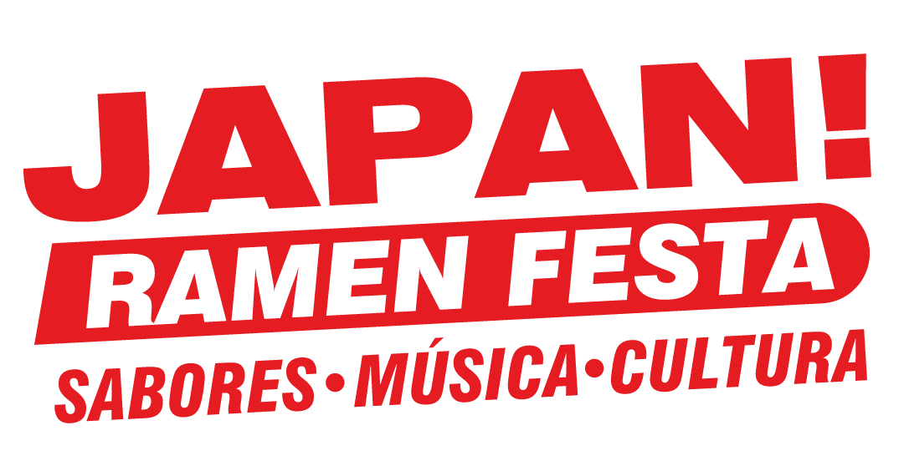
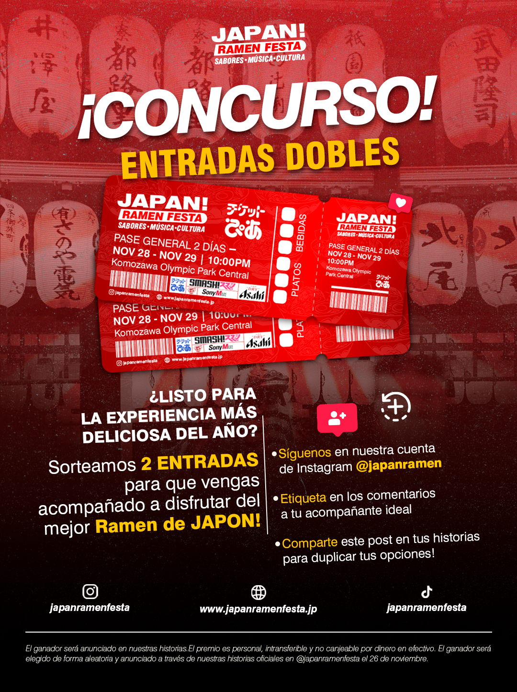
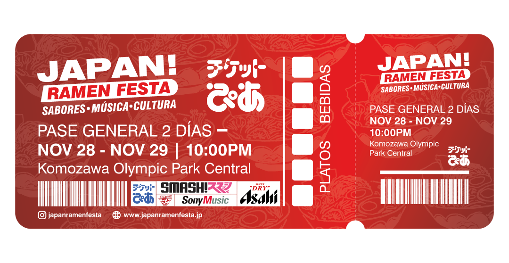

¡BIENVENIDO A JAPAN! RAMEN FESTA!
¿Quieres activar la playlist oficial con las bandas del festival mientras exploras el sitio?
¿Quieres activar la playlist oficial con las bandas del festival mientras exploras el sitio?
JAPAN! RAMEN FESTA

Un encuentro único donde la tradición gastronómica del ramen se fusiona con lo mejor de la música en vivo y la cultura japonesa contemporánea en el corazón de Tokio.

Reúne a los maestros del ramen más icónicos en un solo lugar. Caldos tradicionales, recetas exclusivas y sabores auténticos de cada prefectura.
Caldo cremoso de hueso de cerdo cocido por 18 horas, fideos finos al dente, chashu flameado, huevo ajitsuke y cebollín fresco.
Caldo intenso de miso rojo tostado con mantequilla de Hokkaido, maíz dulce asado, brotes de bambú menma y carne molida especiada.
Edición exclusiva del festival: caldo claro de pollo y dashi marino aromatizado con salsa de soya artesanal y aceite de trufa negra.
Fusión potente de caldo tonkotsu-shoyu con fideos gruesos, hojas de nori crujiente, espinaca blanqueada y pasta de chile ahumado.
Dos jornadas inolvidables con los referentes del J-Rock, J-Pop, Hip-Hop y folklore japonés en vivo. Dale play y escucha un adelanto del festival.

Mucho más que gastronomía: vive la cultura tradicional y urbana de Japón durante todo el fin de semana.
Vota por tu tazón favorito con tu ticket de entrada para coronar al "Gran Campeón del Ramen 2026" el domingo por la noche.
Presentaciones tradicionales de percusión japonesa, danza Awa Odori y callejón iluminado con linternas chochin.
Aprende junto a chefs invitados la técnica del amasado y corte tradicional de fideos alcalinos desde cero.
Terraza al aire libre con cerveza helada Asahi Super Dry, sake artesanal y bebidas tradicionales para maridar tu ramen.

¿Listo para la experiencia más deliciosa del año? Sorteamos 2 Pases Generales de 2 Días para que vengas acompañado a disfrutar del mejor ramen y música de Japón.
* El ganador será elegido de forma aleatoria y anunciado en nuestras historias oficiales el 26 de noviembre de 2026.
La entrada al recinto es liberada mediante registro previo. Adquiere tus cupones de platos y bebidas en puerta o vía Ticket Pia.

Incluye: Acceso general los días 28 y 29 de noviembre (10:00 AM – 10:00 PM) en Komazawa Olympic Park Central + acceso a escenarios y cuponera canjeable por platos y bebidas.